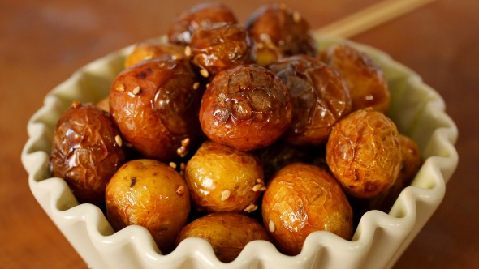

Algamja-jorim

Algamja-jorim (Braised baby potatoes)
In Korean, gamja means potatoes, jorim means braised, and al means egg which
refers to how these small potatoes resemble quail eggs. These irresistible potatoes
are braised in a soy sauce and rice syrup mixture, creating a delicious sweet and savory
side dish that is a perfect addition to any Korean meal.
Ingredients
- 1 pound of baby potatoes
- 2 T cooking oil
- 3 T soy sauce
- 3 T rice syrup (or honey or sugar)
<1i>1 clove minced garlic
- 1 tsp sesame oil
- 1 T toasted sesame seeds
Steps
- Trim any bad spots or broken edges from the potatoes. Wash and rinse in cold water to remove any dirt. Strain
- Add the cooking oil to a 10-12in skillet on medium heat. Add the potatoes
- Cover and cook for 20 minutes until fully cooked, shaking the skillet every 5 minutes so that the potatoes cook evenly without burning.
- turn down the heat to low and add the soy sauce, rice syrup, and garlic. Stir to combine.
- turn up the heat to medium. Keep stirring and cooking for another 4-5 minutes until the sauce is reduced and the potatoes look shiny and wrinkly.
- Remove from heat and mis with sesame oil. Sprinkle the sesame seeds on top.
- Serve with rice. Refrigerate any leftovers for up to 4 days.